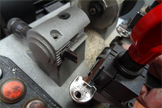
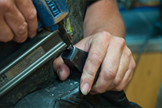
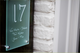

Schoen- & Slotenmakerij Filip staat garant voor meer dan 20 jaar ervaring in schoenreparaties en sleutelservice. Als gediplomeerd schoen-slotenmaker ben ik van mening dat alles wat te snel moet gaan ten koste is van de kwaliteit.
Met andere woorden: voor alle reparaties besteden wij de nodige aandacht.
Klaar terwijl u wacht is dan ook niet aan ons besteed.
Dragers van betere schoenen weten dat elke reparatie van het favoriete paar schoenen heel veel zorg, aandacht en vakmanschap vraagt.
Hierdoor ontstaat de unieke combinatie waardoor uw schoenen weer in perfecte staat komen.
Openingsuren
di-vr: 8u30 - 12u & 13u30 - 18u
ma - zat - zon- & feestdagen: gesloten



Openingsuren
di-vr: 8u30 - 12u & 13u30 - 18u
ma - zat - zon- & feestdagen: gesloten
Adres, telefoonnummer en e-mailadres